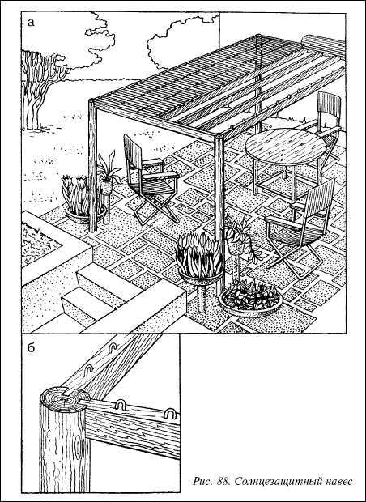
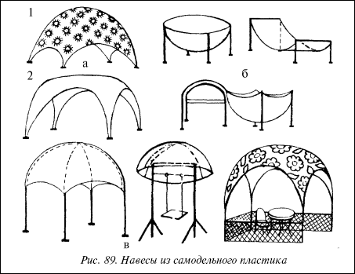
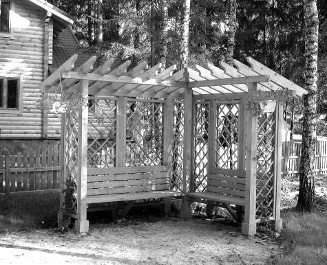
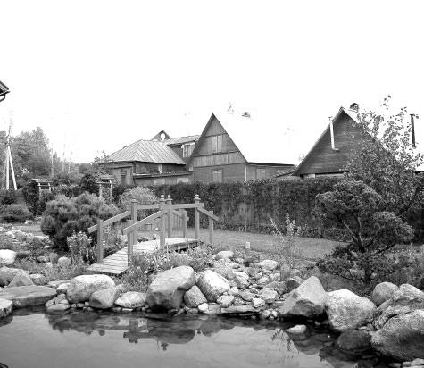

Солнцезащитный навес.

Основной каркас навеса состоит из четырех столбов диаметром около 15 см и высотой 200220 см. Размеры зависят от той площади, которую мы хотим покрыть навесом, однако расстояние между столбами должно быть не более 3–3,5 м. Обвязка стоек осуществляется балками 15x15 см. Крыша делается из кровельных реек, расстояние которых друг от друга зависит от толщины циновок навеса (рис. 88).Рейки прибиваются к балкам. Столбы перед установкой следует обработать противогнилостным составом. При высоте навеса 2 м и более глубина ямы должна быть не менее 60–80 см. Если имеется возможность, вначале в землю вкапываются стальные трубы, в них затем вставляются опорные столбы.
Конструкция крыши навеса устанавливается сверху и закрепляется косо вбиваемыми гвоздями. Поверх балок и кровельных реек раскатывается две или три (в зависимости от размеров) циновки.
С одной стороны они прочно закрепляются на скобках, а с другой стороны, соответственно с продольных сторон держатся на вынимающихся скобках, которые вставляются в предварительно просверленные отверстия.

Рис. 88. Солнцезащитный навес
Следует учесть
Вынимающиеся скобки должны прочно сидеть, но легко выниматься, чтобы через определенные промежутки времени можно было сворачивать циновки, открывая газон солнечным лучам.

Рис. 89. Навесы из самодельного пластика
Своеобразные и привлекательные по форме навесы делают из самодельного пластика.
Сшитое из цветной плотной ткани полотнище пропитывают светлым быстрополимеризующимся лаком и развешивают лицевой стороной вниз на специально подготовленные рамы, стойки и т. п. При этом под действием собственного веса полотнище провисает, приобретая форму купола (свода). После полимеризации лака оно становится достаточно жестким и служит крышей навеса.


При изготовлении таких навесов необходимо учитывать, что ткань, пропитанная лаком, растягивается по-разному в зависимости от того, как было сшито полотнище. Если его сшить так, чтобы нити ткани шли вдоль краев, то купол получится одной формы. Если нити ткани будут расположены по диагонали (под углом 45° к краю полотнища) – другой формы. На рис. 89 а,показаны два купола из одинаковых квадратных полотнищ. У одного (1) нити идут параллельно краям, у другого (2) – по диагонали.
Если на полотнище нашить усиливающую тесьму, например, крестообразно, то форма купола изменится. На рис. 89 б,показаны варианты получения различных форм навесов, при этом используют подставки из гнутой фанеры, труб, досок, покрытых или обернутых полиэтиленовой пленкой (чтобы ткань не приклеивалась к подставкам).
Используют все светлые сорта лаков для полов, которые быстро отверждаются с помощью специальных добавок (они не стекают с наклонных плоскостей).
Выбирают ткань с крупным рисунком (крупный горошек, редкие и крупные цветы на светлом фоне и т. п.) в красных, оранжевых, желтых тонах.
Если купол имеет размеры не более 2x2 м, то не требуется сложного каркаса (купол необходимо убирать на зиму в помещение).
При создании большой оболочки необходимо тщательно продумать и изготовить для нее устойчивый каркас. Его обычно делают из металлических прутиков или тонких труб (рис. 89 в).
Иногда имеет смысл сделать оболочку из двух слоев ткани, причем внутренняя ткань может быть однотонной (бязь, рогожка, холст и т. п.).